An LLM orchestrates OpenCode to:
| Method | External Agent | Complexity | Best For |
|---|---|---|---|
| Hermes Agent + OpenCode Skill | Hermes | Medium | Full orchestration |
| HermesOC | Hermes | Low | Embedded coding |
| Autonomous Dev Team | Any CLI | High | Issue→PR automation |
| Claude Code Bridge | Claude Code | Medium | Benchmarking |
| OpenCode CLI Direct | None | Low | Simple automation |
Hermes Agent by Nous Research has a built-in OpenCode skill that teaches it to control OpenCode via CLI commands.
# Install Hermes Agent
pip install hermes-agent
# Install OpenCode
npm i -g opencode-ai@latest
# Run Hermes with OpenCode skill
hermes chat --skill opencode
# Give it a task
> Implement a REST API with authentication and testsOne-shot task: terminal(command="opencode run 'Add retry logic to API calls'")
Interactive session: Use background PTY sessions for continuous operation.
HermesOC embeds an OpenCode-style coding agent directly into Hermes. No external OpenCode CLI required.
git clone https://github.com/evangit2/hermes-opencode.git
cd hermes-opencode
pip install -e .Fully automated pipeline that turns issues into merged PRs with zero human intervention.
npx skills add zxkane/autonomous-dev-teamSupports: Claude Code, Codex CLI, Kiro CLI, OpenCode, Cursor Agent, Antigravity CLI
Running OpenCode inside an autonomous Claude Code AI Agent.
claude run opencode run 'Generate a retro arcade game in HTML' --model opencode/big-pickleUsing OpenCode's own CLI for automation without external orchestration.
# One-shot
opencode run 'Add retry logic to API calls'
# With file context
opencode run 'Review this config' -f config.yaml
# With thinking
opencode run 'Debug why tests fail' --thinking
# Force model
opencode run 'Refactor auth' --model openrouter/anthropic/claude-sonnet-4Programmatic control via Python: Use subprocess to run OpenCode and parse NDJSON output.

# 1. Install Hermes Agent
pip install hermes-agent
# 2. Install OpenCode
npm i -g opencode-ai@latest
# 3. Configure OpenCode
opencode auth login
# 4. Run Hermes with OpenCode skill
hermes chat --skill opencode
# 5. Give it a task
> Implement a REST API with authentication and tests